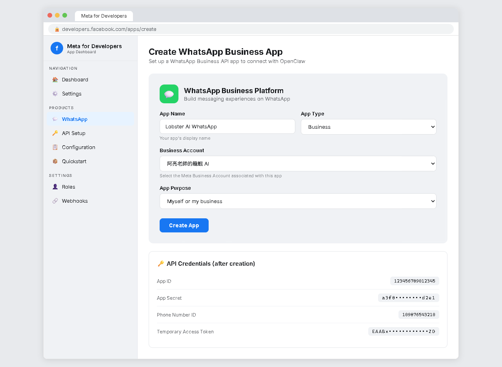
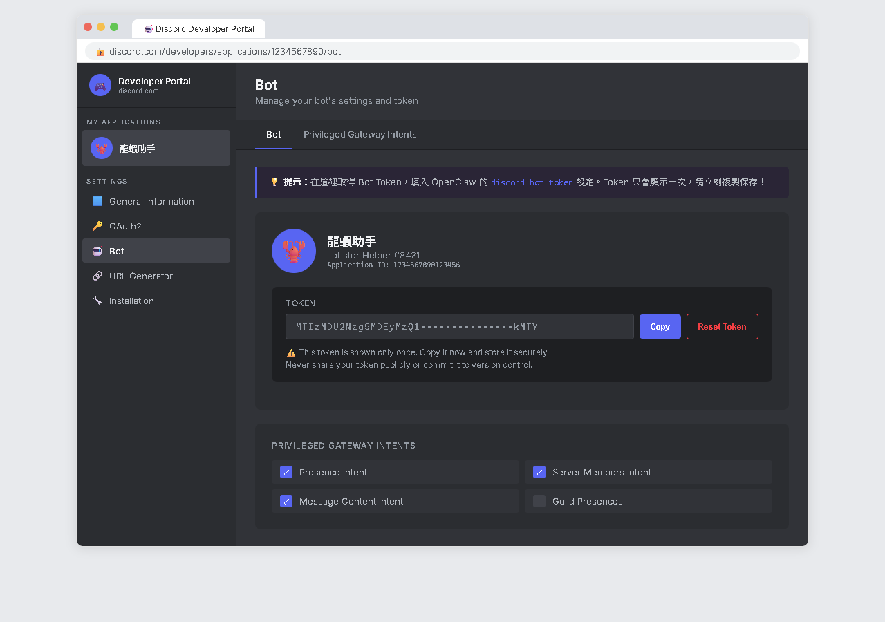
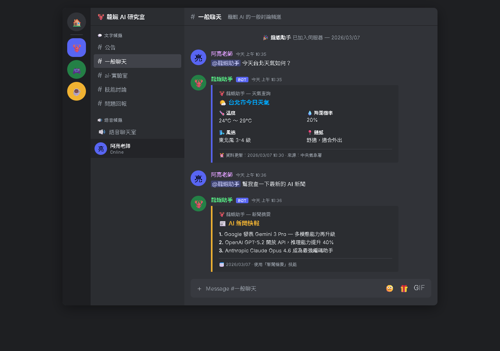

AI Agent 自主代理三王實戰
CH13 | WhatsApp、Discord……全都串起來
你的龍蝦不只是 LINE Bot——它是多通道 AI 助手平台，支援超過 22 種通訊通道，像章魚的觸手伸向各個平台
📋 本章學習目標
- 認識 OpenClaw 支援的 22+ 種通道
- 學會串接 WhatsApp
- 學會串接 Discord
- 了解其他通道的串接方式
13.1 什麼是「通道」？
在 OpenClaw 的架構裡，「通道」（Channel）就是龍蝦跟人類溝通的管道。每個通道都是一個「外掛」，你想用哪個就安裝哪個。
龍蝦的核心（Gateway + AI 模型）跟通道是分開的，所有通道共用同一個 AI 大腦和記憶系統。

┌─── LINE
│
龍蝦核心（AI 大腦）──┼─── Telegram
│
├─── WhatsApp
│
├─── Discord
│
└─── ...更多通道
通道本身是在各平台的後台建立。
真正把通道接到 OpenClaw，則是在 PowerShell / 終端機裡安裝外掛、貼設定值、重啟 Gateway。
也就是通常都會來回「平台後台」和「本機終端機」兩邊。
13.1 通道分類總覽
💬 即時通訊類
| 通道 | 說明 | 適合場景 |
|---|---|---|
| LINE | 台灣最多人用的通訊軟體 | 日常生活、個人助手 |
| Telegram | 功能強大的通訊軟體 | 開發者、進階用戶 |
| 全球用戶最多（20 億+） | 國際友人、海外客戶 | |
| FB Messenger | Facebook 的聊天功能 | 社群經營 |
| 中國大陸最主流通訊 | 與大陸用戶互動 | |
| Signal | 主打隱私的通訊軟體 | 重視隱私的用戶 |
👥 社群平台 / 🏢 企業協作
| 通道 | 說明 | 適合場景 |
|---|---|---|
| Discord | 遊戲和社群平台 | 遊戲社群、開發團隊 |
| Slack | 企業協作平台 | 公司內部、團隊協作 |
| MS Teams | 微軟企業通訊平台 | 企業環境 |
| Matrix | 開源去中心化通訊 | 技術社群 |
台灣日常使用先學 LINE。
想快速測試功能可加 Telegram。
真的有國際客戶或海外需求，再補 WhatsApp。
有社群或遊戲團隊，再補 Discord。
13.1 更多通道類型
📧 傳統通訊類
| 通道 | 說明 | 適合場景 |
|---|---|---|
| 電子郵件 | 正式溝通、自動回信 | |
| SMS | 簡訊 | 通知、驗證 |
| 語音通話（Twilio） | 打電話 | CH20 會深入教 |
🌐 網頁與 API 類
| 通道 | 說明 | 適合場景 |
|---|---|---|
| Web Chat | 嵌入網頁的聊天框 | 網站客服 |
| REST API | 程式呼叫的介面 | 系統整合 |
| WebSocket | 即時雙向通訊 | 自製 App |
💬 即時通訊
LINE / Telegram / WhatsApp / Messenger / WeChat / Signal
👥 社群企業
Discord / Slack / Teams / Matrix
🌐 網頁 API
Web Chat / REST API / WebSocket / Email / SMS
13.2 WhatsApp 串接教學
WhatsApp 是全球用戶最多的通訊軟體（超過 20 億用戶）。串接需要透過 Meta（Facebook）的商業平台。
事前準備
- ✅ 一個 Facebook 帳號
- ✅ 一個 Meta Business 帳號（免費申請）
- ✅ 一個電話號碼（用來註冊 WhatsApp Business）
- ✅ 龍蝦已經在本機運行，且有正式域名（CH12）或 ngrok

申請步驟
- 到
business.facebook.com申請 Meta Business 帳號 - 到
developers.facebook.com登入開發者帳號 - 建立新 App，類型選 「Business」
- 在 App 裡找到 「WhatsApp」 產品，點 「Set up」
- 取得 Phone Number ID、Business Account ID、Access Token
你現在是在 Meta / Facebook 的網站裡建立 App、開啟 WhatsApp 產品、把三個值抄下來。
真正的
openclaw ... 指令，會在下一頁才回到 PowerShell 輸入。
1.
Phone Number ID2.
Business Account ID3.
Access Token先把這三個記到
龍蝦課程-帳號清單.txt，下一頁會直接貼到 OpenClaw。
13.2 WhatsApp 安裝與設定
安裝外掛
openclaw plugins install @anthropic/whatsapp-channel
不是貼回 Meta 後台，也不是貼到 WhatsApp 聊天視窗。
你可以把它理解成：上一頁是在抄資料，這一頁是在把資料灌進 OpenClaw。
設定連線資訊
openclaw config set whatsapp.phoneNumberId 你的PhoneNumberID openclaw config set whatsapp.businessAccountId 你的BusinessAccountID openclaw config set whatsapp.accessToken 你的AccessToken openclaw config set whatsapp.webhookUrl https://bot.你的域名.xyz
phoneNumberId：貼 Meta 後台的 Phone Number IDbusinessAccountId：貼 Meta 後台的 Business Account IDaccessToken：貼 Meta 後台的 Access TokenwebhookUrl：貼你自己的正式網址，不是亂碼示範值
設定 Webhook
- 回到 Meta Developers Console 的 WhatsApp 設定頁面
- 找到 「Webhooks」 區塊
- 設定 Callback URL：
https://bot.你的域名.xyz/whatsapp/webhook - 設定 Verify Token（龍蝦會自動產生）
- 訂閱 「messages」 事件
也就是說：先在 PowerShell 設定 OpenClaw，再回 Meta Developers Console 設定 Webhook。
Callback URL 最後面要記得帶
/whatsapp/webhook。
openclaw gateway status →
② URL 結尾是 /whatsapp/webhook？ →
③ Verify Token 完全一致？openclaw config get whatsapp.verifyToken →
④ Tunnel 正常？ →
⑤ 都對了仍失敗 → openclaw gateway restart 再試
重啟並測試
openclaw gateway restart
不是只看 Meta 後台驗證通過。
真正算成功，是你用另一支手機的 WhatsApp 傳訊息後，龍蝦真的在 WhatsApp 裡回你。
13.3 Discord 串接教學
Discord 是全球最大的社群平台之一。把龍蝦串上 Discord，它就能在你的 Discord 伺服器裡當助手。

建立 Discord Bot 步驟
- 到
discord.com/developers/applications - 點 「New Application」，輸入名稱（例如「龍蝦助手」）
- 在左側選 「Bot」，點 「Add Bot」
- 點 「Reset Token」 產生 Bot Token 並複製保管
- 開啟 Message Content Intent 權限
- 在 OAuth2 → URL Generator 勾選 bot + 所需權限
- 複製生成的 URL，在瀏覽器開啟並授權加入伺服器
你現在的目標只有兩件事：
1. 建出一個 Discord Bot
2. 把
Bot Token 抄下來，準備下一頁貼進 OpenClaw
13.3 Discord 設定與特有注意事項
安裝與設定
openclaw plugins install @anthropic/discord-channel openclaw config set discord.botToken 你的BotToken openclaw gateway restart
Discord 這裡比 WhatsApp 簡單很多，因為只要一個
Bot Token，也不用另外去填 Webhook URL。

到 Discord 伺服器裡的任何文字頻道，@龍蝦助手 你好！ 測試回覆。
回到你剛剛授權加入 Bot 的 Discord 伺服器。
在任何文字頻道裡，用
@你的Bot名稱 叫它，例如：@龍蝦助手 你好！如果它有正常回覆，就代表 Discord 通道接成功了。
Discord 特有注意事項
@提及才回覆
預設只回覆被 @mention 的訊息，跟 LINE 群組行為類似
Markdown 差異
Discord 的 Markdown 不支援表格，龍蝦會自動用條列式取代
多伺服器
同一個 Bot 可被邀請到多個 Discord 伺服器，分別服務
斜線指令
支援 / 開頭的斜線指令，某些技能可註冊斜線指令
13.4 其他通道簡介
💼 Slack
企業最常用的團隊協作平台。到 api.slack.com/apps 建立 App，取得 Bot Token，安裝外掛即可。
openclaw plugins install @anthropic/slack-channel
龍蝦變成自動回信助手。設定 IMAP/SMTP 伺服器資訊，定期檢查收件匣並自動回覆。
openclaw plugins install @anthropic/email-channel
🌐 Web Chat
在自己的網站嵌入聊天框，讓訪客直接跟龍蝦對話。適合網站客服、線上教學平台。
openclaw plugins install @anthropic/webchat-channel
📘 FB Messenger
需要 Meta Business 帳號（跟 WhatsApp 類似），適合 Facebook 粉絲專頁的自動客服。
🏢 Microsoft Teams
需要 Microsoft 365 + Azure AD。設定較複雜，適合有 IT 支援的企業用戶。
學生只要知道其他通道大致也是同一個模式：
先去平台後台建立 App / Bot，拿到 Token 或連線資訊。
再回 PowerShell 用
openclaw plugins install ... 和 openclaw config set ... 接上。
13.6 小結與展望
🐙 多通道能力
OpenClaw 支援 22+ 種通訊通道，你的龍蝦可以同時守在不同平台上。
透過 Meta Business 平台串接，需要正式域名。每月 1,000 則免費對話。
🎮 Discord
用 WebSocket 連線，不需要正式域名。支援多伺服器、斜線指令。
🔌 隨需擴充
重點不是全裝，而是知道龍蝦有這個能力——需要時隨時擴充。
常見問題
- 裝多通道不會讓龍蝦變慢——真正消耗資源的是 AI 模型回覆
- 不同通道的短期記憶分開，長期記憶（USER.md）共用
- 只用 LINE 完全可以，其他通道都是「有需要再裝」
📖 下一章預告：CH14 一隻不夠？那就養兩隻！
不管裝了多少通道，目前背後都是同一隻龍蝦。如果你想要「一隻當秘書、另一隻當學習夥伴」呢？下一章教你龍蝦的多重分身——多隻龍蝦各自有不同人設，各司其職！